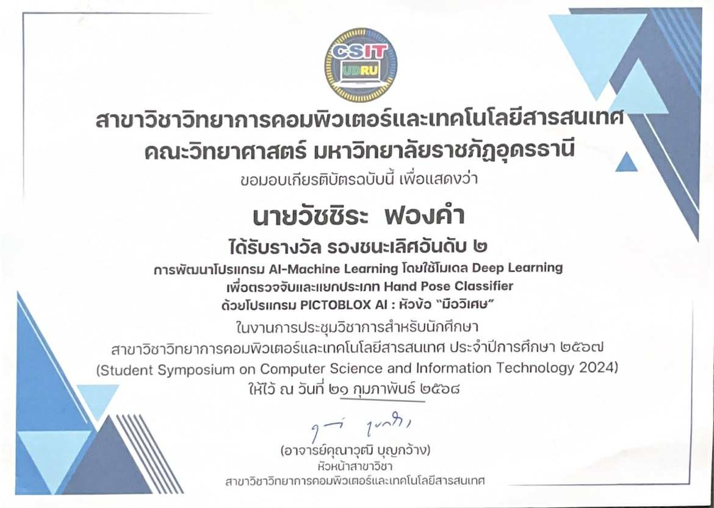
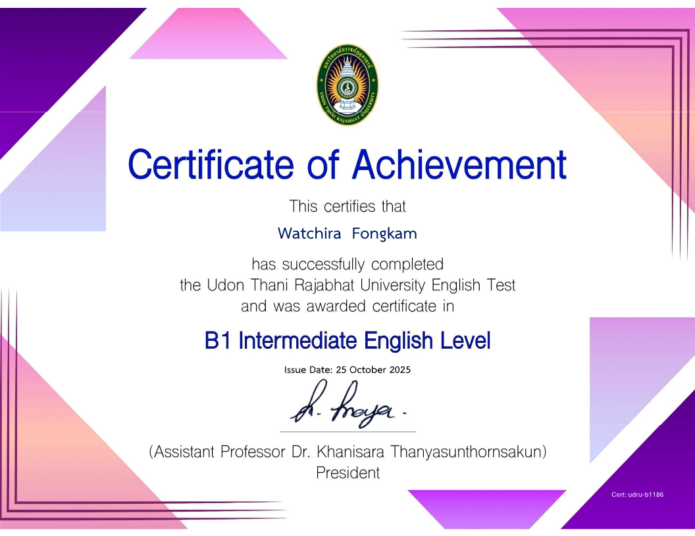

1. แนะนำตัว (Introduction / Profile)
สวัสดีครับ นาย วัชชิระ ฟองคำ เป็นนักศึกษาสาขาวิทยาการคอมพิวเตอร์ สนใจด้าน AI, Web Dev, Data Science โดยเฉพาะเรื่อง Machine Learning และ Data Visualization. ปัจจุบันกำลังมองหาประสบการณ์การทำโปรเจกต์จริงและโอกาสฝึกงานในสายงานที่เกี่ยวข้อง.
2. ทักษะ (Skills)
Programming
Python
Java
HTML/CSS
JavaScript
SQL
VS Code
Soft Skills
การสื่อสาร, การทำงานเป็นทีม, การแก้ปัญหา
3. ผลงานที่ผ่านมา (Projects / Portfolio)

รางวัลรองชนะเลิศอันดับ 2
การพัฒนาโปรแกรม AI - Machine Learning

ใบประกาศนียบัตร
ผ่านการอบรม "พัฒนาทักษะดภาษาอังกฤษ CEFR ระดับ B1"
4. การศึกษา (Education)
มหาวิทยาลัยราชภัฏอุดรธานี
สาขา: วิทยาการคอมพิวเตอร์
ปีการศึกษา: 2567 – ปัจจุบัน
5. กิจกรรมและผลงานอื่น ๆ (Activities / Achievements)
- เข้าร่วมอบรม "พัฒนาทักษะดภาษาอังกฤษ CEFR ระดับ B1"
- เป็นพี่เลี้ยงในการประกวดแข่งขัน Since Ambassador 2025
- เข้าร่วมกิจกรรมต่างๆในมหาวิทยาลัยราชภัฏอุดรธานี
7. องค์ประกอบเสริม (Career Interest)
เป้าหมาย: Intern / Junior Data Scientist / Web Developer